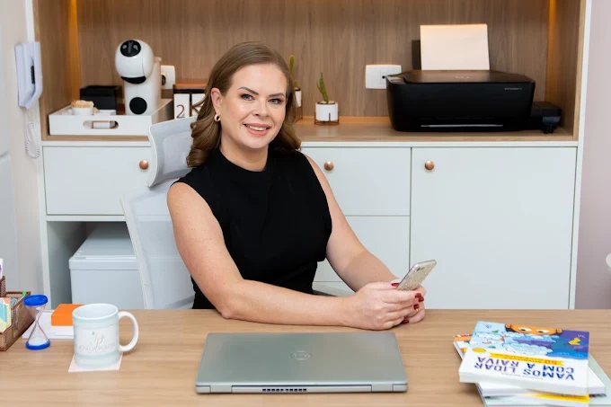
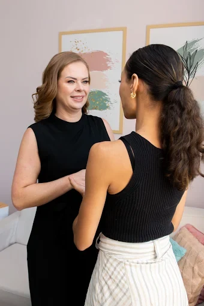
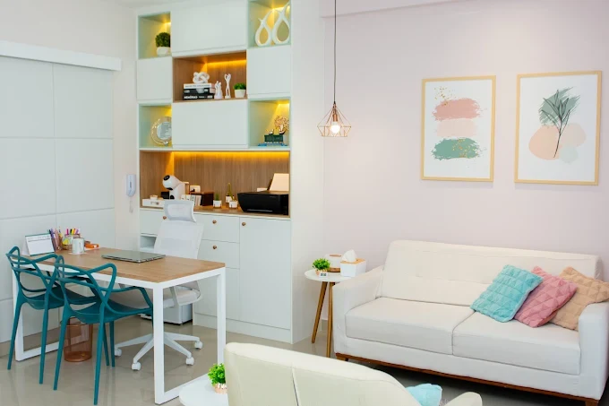
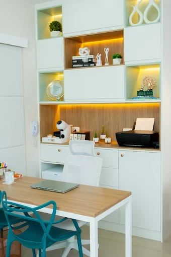
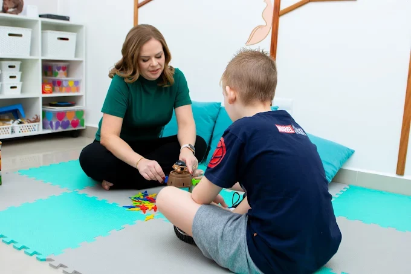

★★★★★
Minha filha de 8 anos gosta muito da psicóloga que a atende. Fica esperando a semana toda para ter o momento dela. Eu vi muita melhora na minha filha. Consultório bem localizado.
Psicologia clínica para crianças, adolescentes, famílias e casais, com orientação parental, em Santos.
5,0 · 55 avaliações no Google
O atendimento é adaptado a quem chega: a criança que precisa brincar, o adolescente que precisa ser ouvido, os pais que buscam orientação e o casal que quer se reencontrar.
Atendimento com brincadeiras, em uma sala preparada para a criança expressar emoções e aprender a lidar com elas.
Um espaço de escuta para falar das mudanças, das relações e da construção de quem se é.
Apoio para que pais, filhos e responsáveis se entendam melhor e atravessem momentos delicados juntos.
Orientação para entender o comportamento dos filhos e fortalecer a convivência em casa.
Conversas guiadas para melhorar a comunicação e cuidar do vínculo entre o casal.

Psicóloga clínica em Santos, com atendimento voltado a crianças, adolescentes, famílias e casais.
Acredito que a mudança começa quando a pessoa se sente segura para falar e brincar do seu jeito. Por isso, cada atendimento é pensado com atenção ao paciente e à família que o acompanha.
Cores suaves, luz aconchegante e uma sala de brincar para os pequenos.



Minha filha de 8 anos gosta muito da psicóloga que a atende. Fica esperando a semana toda para ter o momento dela. Eu vi muita melhora na minha filha. Consultório bem localizado.
Josélia é uma profissional muito acolhedora, experiente e que auxiliou demais a minha família em um momento delicado. Só tenho a agradecer por ter encontrado essa pessoa com um olhar tão sensível e amoroso.
Profissional extremamente responsável, comprometida e gentil. Recomendo sim.
Profissional muito atenciosa. Gostei muito do consultório.
Sem palavras para essa profissional! Gratidão por todo cuidado que teve com minha menina e, hoje, comigo. Maravilhosa demais!
Profissional maravilhosa! Paciente e amorosa. Sinto que você me ajudou a entender e aceitar as minhas diferenças, o que reduziu minha ansiedade. Obrigada por fazer parte de nossas vidas. 🥰
Excelente profissional, muito dedicada e preocupada com a evolução do paciente e família. Tem uma excelente estrutura física no consultório.
Conte quem será atendido e envie a mensagem pelo WhatsApp. Você recebe os horários disponíveis e as orientações para o primeiro atendimento.
Chamar no WhatsApp